Cuando el se dirige al primer formulario selecciona el numero correspondiente en el primer ciclo
Cuando el se dirige al segundo formulario selecciona el numero correcto en el primer ciclo
Cuando el se dirige al tercer formulario escribe la cantidad de letras correctas en el primer ciclo
| letrasPrimerCiclo |
| <letrasPrimerCiclo> |
Cuando el se dirige al cuarto formulario escribe el numero de figuras correcto en el primer ciclo
| figurasPrimerCiclo |
| <figurasPrimerCiclo> |
Cuando el se dirige al primer formulario selecciona el numero correspondiente en el segundo ciclo
Cuando el se dirige al segundo formulario selecciona el numero correcto en el segundo ciclo
Cuando el se dirige al tercer formulario escribe la cantidad de letras correctas en el segundo ciclo
| letrasSegundoCiclo |
| llllllllllllllllllllllllllllllllllllllllllllllllllllllllllllllllllllllllllllllllllllllllllllllllllllllllllllllllllllllllllllllllllllllllllllllllllllllllllllllllllllllllllllllllllllllllllllllllllllllllllllllllllllllllllllllllllllllllllllllllllllllllllllllllllllllllllllllllllllllllllllllllllllllllllllllllllllllllllllllllllllllllllllllllllllllllllllllllllllllllllllllllllllllllllllllll |
Cuando el se dirige al cuarto formulario escribe el numero de figuras correcto en el segundo ciclo
Cuando el se dirige al primer formulario selecciona el numero correspondiente en el tercer ciclo
Cuando el se dirige al segundo formulario selecciona el numero correcto en el tercer ciclo
Cuando el se dirige al tercer formulario escribe la cantidad de letras correctas en el tercer ciclo
| letrasTercerCiclo |
| vvvvvvvvvvvvvvvvvvvvvvvvvvvvvvvvvvvvvvvvvvvvvvvvvvvvvv |
Cuando el se dirige al cuarto formulario escribe el numero de figuras correcto en el tercer ciclo
Cuando el se dirige al primer formulario selecciona el numero correspondiente en el cuarto ciclo
Cuando el se dirige al segundo formulario selecciona el numero correcto en el cuarto ciclo
Cuando el se dirige al tercer formulario escribe la cantidad de letras correctas en el cuarto ciclo
| letrasCuartoCiclo |
| JJJJJJJJJJJJJJJJJJJJJJJJJJJJJJJJJJJJJJJJJJJJJJJJJJJJJJJJJJJJJJJJJJJJJJJJJJJJJJJJJJJJJJJJJJJJJJJJJJJJJJJJJJJJJJJJJJJJJJJJJJJJJJJJJJJJJJJJJJJJJJJJJJJJJJJJJJJJJJJJJJJJJJJJJJJJJJJJJJJJJJJJJJJJJJJJJJJJJJJJJJJJJJJJJJJJJJJJJJJJJJJJJJJJJJJJJJJJJJJJJJJJJJJJJJJJJJJJJJJJJJJJJJJJJJJJJJJJJJJJJJJJJJJJJJJJJJJJJJJJJJJJJJJJJJJJJJJJJJJJJJJJJJJJJJJJJJJJJJJJJJJJJJJJJJJJJJJJJJJJJJJJJJJJJJJJJJJJJJJJJJJJJJJJJJJJJJJJJJJJJJJJJJJJJJJJJJJJJJJJJJJJJJJJJJJJJJJJJJJJJJJJJJJJJJJJJJ |
Cuando el se dirige al cuarto formulario escribe el numero de figuras correcto en el cuarto ciclo
Cuando el se dirige al primer formulario selecciona el numero correspondiente en el quinto ciclo
Cuando el se dirige al segundo formulario selecciona el numero correcto en el quinto ciclo
Cuando el se dirige al tercer formulario escribe la cantidad de letras correctas en el quinto ciclo
| letrasQuintoCiclo |
| iiiiiiiiiiiiiiiiiiiiiiiiiiiiiiiiiiiiiiiiiiiiiiiiiiiiiiiiiiiiiiiiiiiiiiiiiiiiiiiiiiiiiiiiiiiiiiiiiiiiiiiiiiiiiiiiiiiiiiiiiiiiiiiiiiiiiiiiiiiiiiiiiiiiiiiiiiiiiiiiiiiiiiiiiiiiiiiiiiiiiiiiiiiiiiiiiiiiiiiiiiiiiiiiiiiiiiiiiiiiiiiiiiiiiiiiiiiiiiiiiiiiiiiiiiiiiiiiiiiiiiiiiiiiiiiiiiiiiiiiiiiiiiiiiiiiiiiiiiiiiiiiiiiiiiiiiiiiiiiiiiiiiiiiiiiiiiiiiiiiiiiiiiiiiiiiiiiiiiiiiiiiiiiiiiiiiiiiiiiiiiiiiiiiiiiiiiiiiiiiiiiiiiiiiiiiiiiiiiiiiiiiiiiiiiiiiiiiiiiiiiiiiiiiiiiiiiiiiiiiiiiiiiiiiiiiiiiiiiiiiiiiiiiiiiiiiiii |
Cuando el se dirige al cuarto formulario escribe el numero de figuras correcto en el quinto ciclo
Cuando el se dirige al primer formulario selecciona el numero correspondiente en el sexto ciclo
Cuando el se dirige al segundo formulario selecciona el numero correcto en el sexto ciclo
Cuando el se dirige al tercer formulario escribe la cantidad de letras correctas en el sexto ciclo
| letrasSextoCiclo |
| DDDDDDDDDDDDDDDDDDDDDDDDDDDDDDDDDDDDDDDDDDDDDDDDDDDDDDDDDDDDDDDDDDDDDDDDDDDDDDDDDDDDDDDDDDDDDDDDD |
Cuando el se dirige al cuarto formulario escribe el numero de figuras correcto en el sexto ciclo
Cuando el se dirige al primer formulario selecciona el numero correspondiente en el septimo ciclo
Cuando el se dirige al segundo formulario selecciona el numero correcto en el septimo ciclo
Cuando el se dirige al tercer formulario escribe la cantidad de letras correctas en el septimo ciclo
| letrasSeptimoCiclo |
| MMMMMMMMMMMMMMMMMMMMMMMMMMMMMMMMMMMMMMMMMMMMMMMMMMMMMMMMMMMMMMMMMMMMMMMMMMMMMMMMMMMMMMMMMMMMMMMMMMMMMMMMMMMMMMMMMMMMMMMMMMMMMM |
Cuando el se dirige al cuarto formulario escribe el numero de figuras correcto en el septimo ciclo
Cuando el se dirige al primer formulario selecciona el numero correspondiente en el octavo ciclo
Cuando el se dirige al segundo formulario selecciona el numero correcto en el octavo ciclo
Cuando el se dirige al tercer formulario escribe la cantidad de letras correctas en el octavo ciclo
| letrasOctavoCiclo |
| aaaaaaaaaaaaaaaaaaaaaaaaaaaaaaaaaaaaaaaaaaaaaaaaaaaaaaaaaaaaaaaaaaaaaaaaaaaaaaaaaaaaaaaaaaaaaa |
Cuando el se dirige al cuarto formulario escribe el numero de figuras correcto en el octavo ciclo
Cuando el se dirige al primer formulario selecciona el numero correspondiente en el noveno ciclo
Cuando el se dirige al segundo formulario selecciona el numero correcto en el noveno ciclo
Cuando el se dirige al tercer formulario escribe la cantidad de letras correctas en el noveno ciclo
| letrasNovenoCiclo |
| mmmmmmmmmmmmmmmmmmmmmmmmmmmmmmmmmmmmmmmmmmmmmmmmmmmmmmmmmmmmmmmmmmmmmmmmmmmmmmmmmmmmmmmmmmmmmmmmmmmmmmmmmmmmmmmmmmmmmmmmmmmmmmmmmmmmmmmmmmmmmmmmmmmmmmmmmmmmmmmmmmmmmmmmmmmmmmmmmmmmmmmmmmmmmmmmmmmmmmmmmmmmmmmmmmmmmmmmmmmmmmmmmmmmmmmmmmmmmmmmmmmmmmmmmmmmmmmmmmmmmmmmmmmmmmmmmmmmmmmmmmmmmmmmmmmmmmmmmmmmmmmmmmmmmmmmmmmmmmmmmmmmmmmmmmmmmmmmmmmmmmmmmmmm |
Cuando el se dirige al cuarto formulario escribe el numero de figuras correcto en el noveno ciclo
Cuando el se dirige al primer formulario selecciona el numero correspondiente en el decimo ciclo
Cuando el se dirige al segundo formulario selecciona el numero correcto en el decimo ciclo
Cuando el se dirige al tercer formulario escribe la cantidad de letras correctas en el decimo ciclo
| letrasDecimoCiclo |
| MMMMMMMMMMMMMMMMMMMMMMMMMMMMMMMMMMMMMMMMMMMMMMMMMMMMMMMMMMMMMMMMMMMMMMMMMMMMMMMMMMMMMMMMMMMMMMMMMMMMMMMMMMMMMMMMMMMMMMMMMMMMMMMMMMMMMMMMMMMMMMMMMMMMMMMMMMMMMMMMMMMMMMMMMMMMMMMMMMMMMMMMMMMMMMMMMMMMMMMMMMMMMMMMMMMMMMMMMMMMMMMMMMMMMMMMMMMMMMMMMMMMMMMMMMMMMMMMMMMMMMMMMMMMMMM |
Cuando el se dirige al cuarto formulario escribe el numero de figuras correcto en el decimo ciclo
Entonces envia la informacion continua el ciclo y puede ver el mensaje <mensajeFinal>


 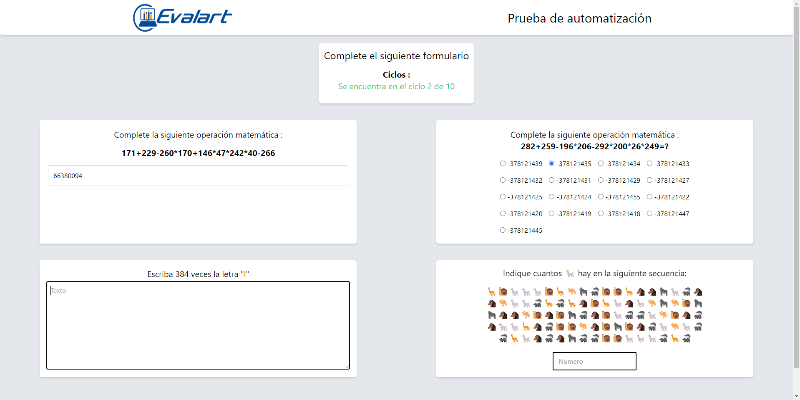
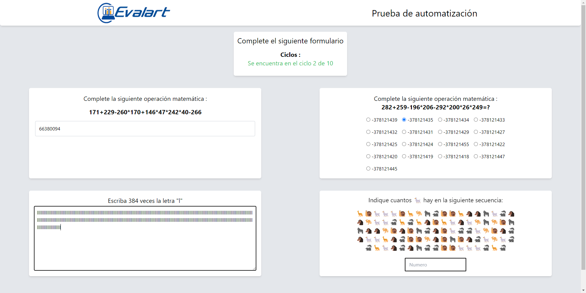
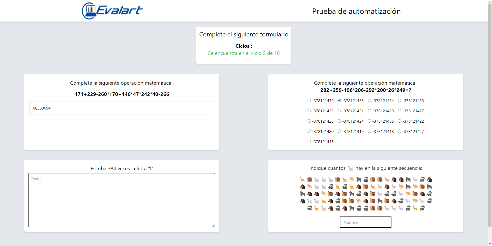
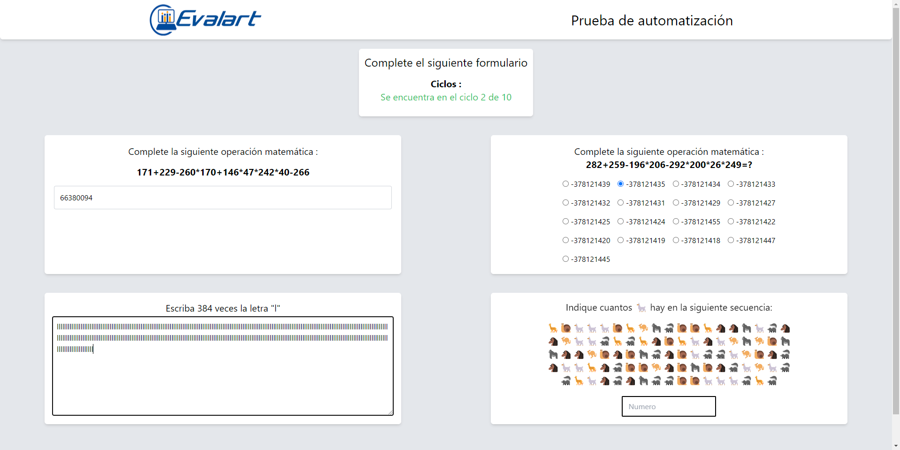
")


 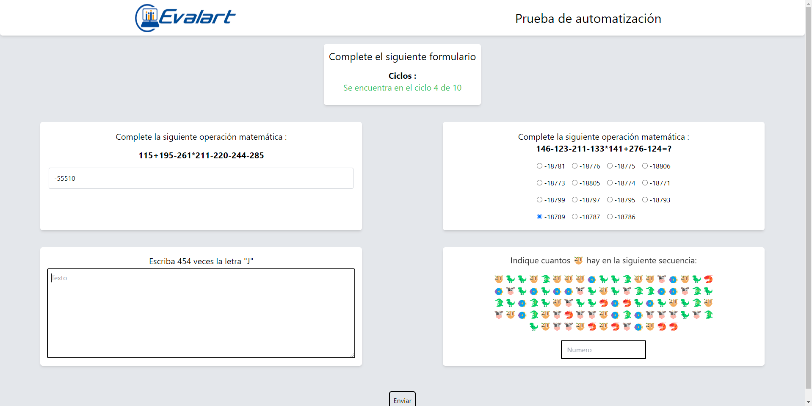
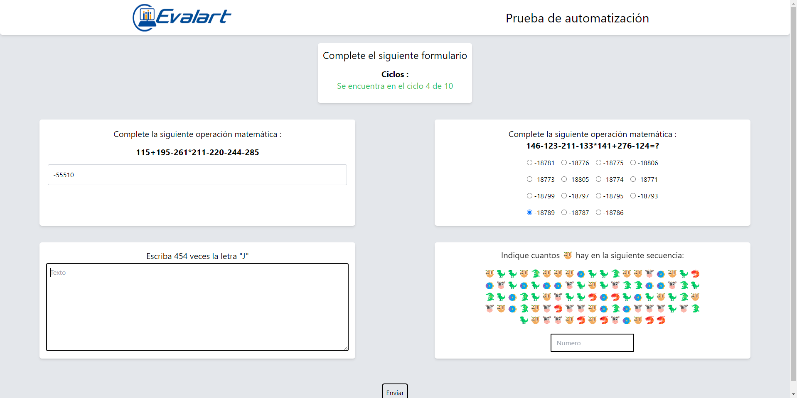
 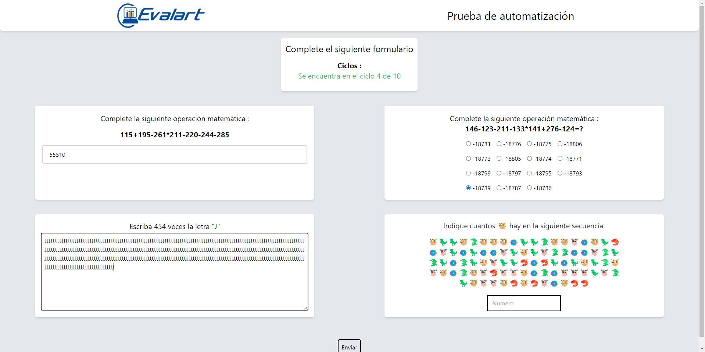
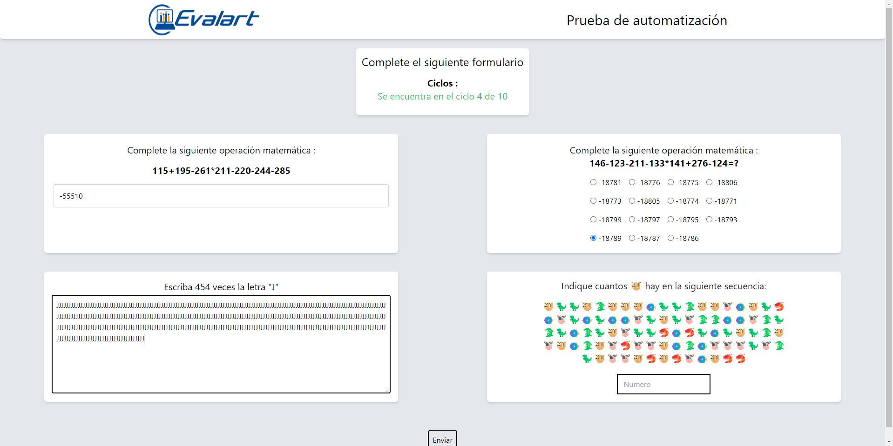

 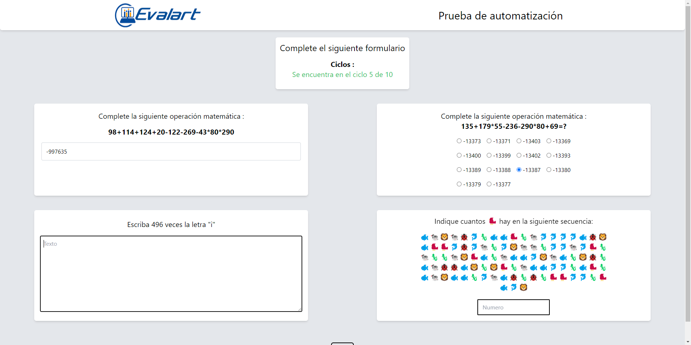
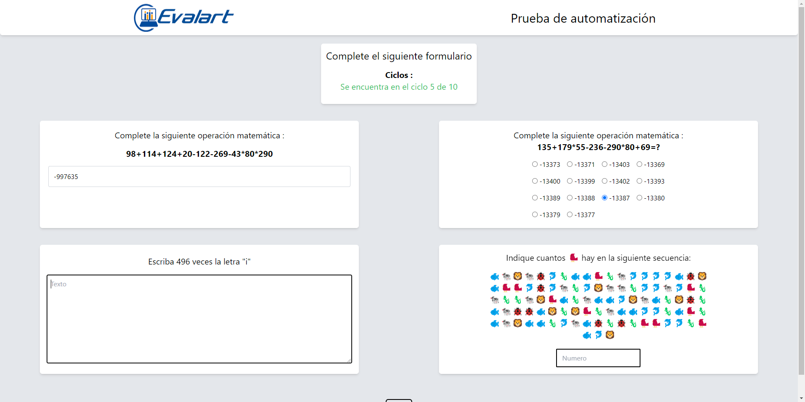
 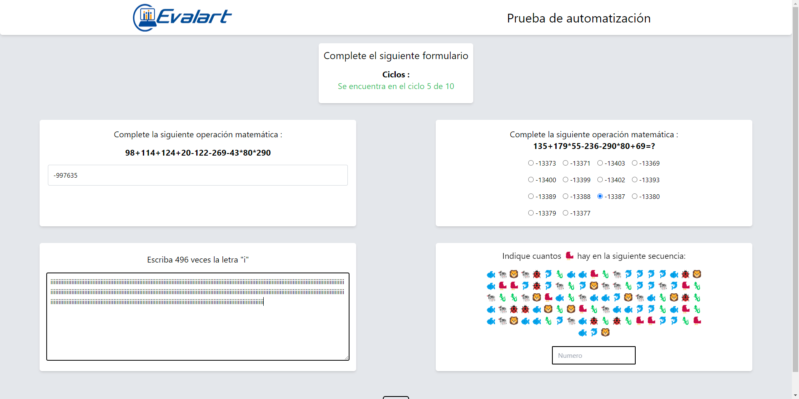
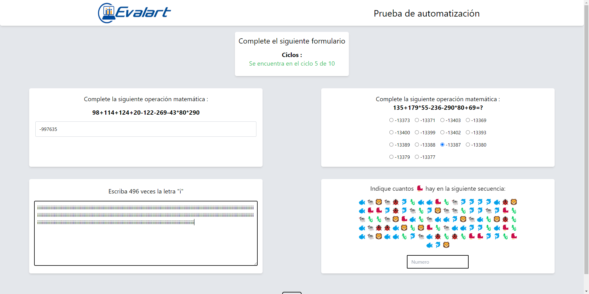